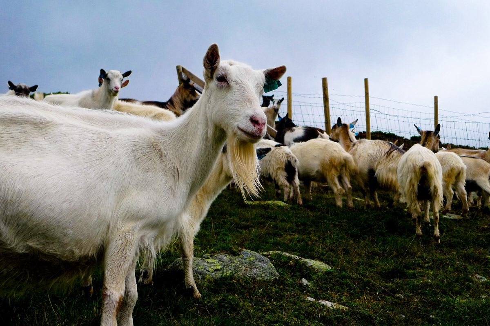
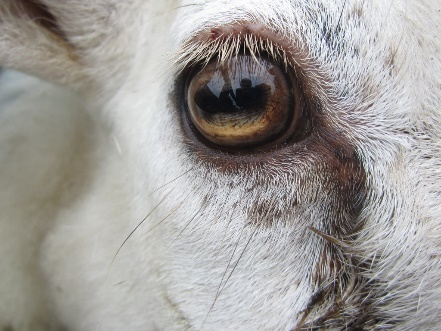
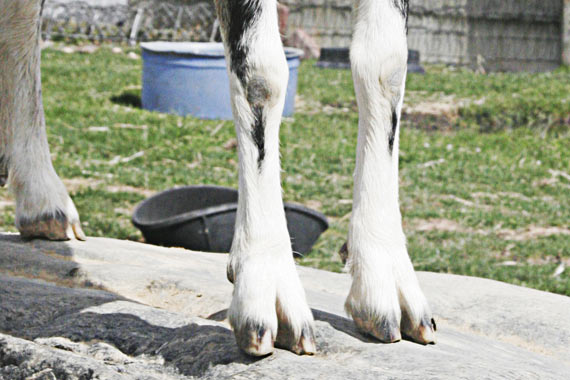

Vitenskapelig navn: Capra hircus
Stammer fra: Besoargeit ( Capra aegagrus)
Eteatferd: Herbivor, drøvtygger
Sosialatferd: Flokkdyr
Brunst og parring: ?
Drektighet: Ca. 149 dager
Antall kje: 1–2
Kjønn: Hannen kalles geitebukk, hunnen kalles geit og avkommet kje eller killing

Begrepet småfe blir ofte brukt som en samlebetegnelse på geit og sau. Men til tross for det, så har disse dyra har disse to dyrene mange forskjellige særtrekk, både fysiologisk og atferdsmessig. Generelt er geiter mer nysgjerrige og mindre fryktsomme enn sauer.
Tamgeit stammer i hovedsak fra besoargeita, ofte bare kalt villgeit.
Besoargeita kommer fra kuperte, tørre fjellomgivelser i Vest-Asia. Denne geita lever fortatt i vill tilstand, men er regnet som sårbar.
Forskerne tror imidlertid at det ikke bare er denne geita som er tamgeitas opprinnelse, men at den sannsynligvis er en hybrid, altså er det senere blitt innblandet flere forskjellige villgeit.
Geita ble sannsynligvis den første av de drøvtyggende artene til å bli domestisert. Det skjedde sannsynligvis 8000–10000 år siden i de iranske fjellene Zargos.
Til Norge kom geita med de første bøndene for ca. 6000 år siden.
Her ble geita spesielt viktig for fattige bønder: Den kunne bevege seg lett i ulendt terreng, og det var derfor mulig å ha geitedrift på steder hvor det ikke var mulig å drive med kyr. Geita ga både melk og kjøtt, ragg og skinn – alt verdifullt for bønder som skulle etablere seg i kalde nord.
I dag finnes geita på alle verdens kontinenter. De er særlig vanlig å holde i arrige strøk.
Til sammen finnes det rundt 250 geiteraser i hele verden, men kun et fåtall av disse er å treffe i Norge.
Norsk melkegeit er den desidert vanligste geiterasen her til lands. Rasen stammer fra den nordeuropeiske landrasegeita.
Du lese om de andre rasene vi har i Norge på nettsidene til Norsk Sau og Geit:
Norsk melkegeit varierer veldig når det gjelder farge, fargekombinasjoner og fargemønster. De kan ha kort eller langt ragg, være kollet eller hornet. En gjennomsnittlig melkegeit veier rundt 50 kg.
Geit er dagaktiv.
De er mest aktive på formiddagen og kvelden, og tar en hvilestund midt på dagen.
Geitas beiteaktivitet avhenger midlertidig avhengig av vær og vind. Er det veldig ugunstige forhold, så søker de ly og kommer fram straks det løyer.
Hørselen er god. Geiter kan høre både høyfrekvente lyder, som hvin fra kje, og lavfrekvente lyder, som hvis noen tråkker i bakken.
De har også evnen til å bevege ørene for å finne kilden til lydene.
Geita ser godt.
Som alle andre hovdyr har geita horisontale, rektangulære pupiller. Dette og øynenes plassering på hodet, gir dem 340 graders synsvidde, noe som gir geita god oversikt over omgivelsene sine. De kan nesten se hva som foregår rett bak seg – og det uten å snu seg!

Geita har horisontale, rektangulære pupiller. Foto: Grantland Kilgore , Flickr
Geiter har svært god luktesans, og det vomeronasale organ er godt utviklet.
Organet er spesielt viktig for reproduktiv atferd, og avgjørende for «bukkeffekten».
Det er også årsaken til at geiter utfører flehmen-respons, noe som er typisk for alle drøvtyggende hanndyr.
Smaksløkene kan skille mellom bittert, søtt, salt og surt. Toleransen for bitter smak er større enn hos storfe og sau. Med andre ord så er deres diett er bredere, de spiser også planter som smaker bittert.
Geita er partået hovdyr. Hovene har harde kanter og er hule under. Det gjør at de får godt feste, selv på nakent berg.
De har dessuten en utmerket evne til å ta seg frem i ulendt terreng. De er flinke til å klatre og hoppe oppover bratte fjellskrenter. De har god balanse, og kan tilmed klatre i trær.

Fordi geita opprinnelig stammer fra land med varmt klima, har de fleste geiteraser lite fett under huden og i hårlaget, noe som gir dårlig beskyttelse mot kulde.
Norske melkegeiter har derimot tykkere underpels enn de opprinnelige geiterasene, en pels som isolerer godt, og de kan takle lave temperaturer godt. Denne rasen kan fint tilpasse seg lufttemperatur på -12 °C i et tørt og trekkfritt miljø, men tar seg gjerne en luftetur også når temperaturen nærmer seg -20 °C. Regn og snø liker de ikke.
Optimal omgivelsestemperatur er x°C.
Ved å stå tett inntil hverandre oppnår de beskyttelse mot kulde.
Geita er et flokkdyr.
Villgeiter danner grupper av varierende størrelse, avhengig av miljøet og tilgangen på ressurser. De vanligste gruppene er 2–10 dyr, men også grupper på 100–150 dyr er observert.
Hunnene med deres avkom og hannene lever i forskjellige grupper.
Det er en rangordninger i både ville og tamme geiteflokker, og både blant hunnene og hannene.
Alder, hornstørrelse og vekt har betydning hvor hvilke av individene som blir dominante, og hvilke som blir subordinate: Det dominante individet er ofte den som er eldst, har størst horn og veier mest.
Sosial status er sterkt avgjørende for tilgang på mat og make i flokken.
Det er mye som tyder på at det er et strengt lineært hierarki, der det finnes én dominant ledergeit, når det er konkurranse om ressursene, som når det er lite mat tilgjengelig. Men at den hierarkiske strukturen er mindre klar og mer dynamisk når ressurstilgangen er god.
Det er registrert høyere aggresjon blant geitene enn hos noen andre hovdyr. Typiske aggressiv atferd hos geit viser seg som stanging, trusler og biting. Med trusler menes at et individ løper mot et annet med hode lavt.
Forekomsten av aggresjon øker både med økt alder og med økt kroppsvekt.
Tilgangen på mat er en viktig faktor for aggresjon: Jo mindre mat, jo mer aggresjon.
Blant villgeiter er det observert økt konkurranse og aggresjonsnivå på høsten, i takt med minkende mattilgang.
Dette ser vi også hos domestiserte geiter. De blir straks mer aggressive mot hverandre hvis bonden øker antall dyr per fôringsplass.
Hos geiter finnes det også meglere. Dette er individer som avbryter konflikter mellom to eller flere individer. Slike geiter har ofte høy status i flokken, og høyere enn individene som er involvert i konflikten.
Bukker vil være mer aggressive i paringssesong
Duftsignaler er viktige hos geiter, og mer enn hos sau.
Duftsignalene kommer via urin og spesielle duftkjertler de har på kroppen, blant annet en ved halen.
Både bukker og hunngeiter urinerer ofte, spesielt når de vil annonsere sin reproduktive status.
Duftsignaler er også viktige for utviklingen av forholdet mellom mor og barn.
Geiter er veldig høyrøstede dyr. Snøfting, høyfrekvente hvin og nysing er vanlige lyder å høre fra dem.
De mekrer (og breker.)
Vokale signaler er spesielt viktige i kommunikasjonen mellom mor og barn, og kjeene gir lyd fra seg straks de føler seg tuet eller blir forlatt. Disse lydene er ofte veldig høyfrekvente.
Vokale signaler er også viktige for at bukker skal gjenkjenne hunner i brunst.
Under den seksuelle sesongen vil hannene vokalisere mye mer enn vanlig, men det er ingenting som tyder på at dette stimulerer seksuell aktivitet hos hunnene.
Hunngeiter blir kjønnsmodne i en alder av 5–6 måneder. Geitebukkene når?
Hunngeiter kommer i brunst om høsten når daglengden avtar. Når?
Selve brunsten, da hun er paringsklar, varer ca. 36 timer. En brunstsyklus, altså antall dager det går mellom hver gang hun er brunstig, er på mellom 17 til 23 dager.
Geita snuser og utforsker bukken mens de går rundt hverandre. Bukken kurtiserer ved å puffe i geita slik at hun snur seg mot ham.
Etter en stund vil en brunstig geit stå stille slik at bukken får bedekke.
Paringen varer i ca. x sekunder og bukken trekker seg tilbake.
Geita er drektig i ca. 149 dager. Geita får ett til to kje per år, vanligvis født vinterstid.
I naturen vil geita gå unna flokken og finne et passende lunt sted å føde. Hun graver i underlaget for å lage seg en god fødeplass.
Etter kjeing slikker geita kjeet tørt. Dessuten mekrer hun. Dette er viktig for at mor og avkom skal bli godt kjent og senere kjenne hverandre igjen. Det etableres et tett bånd mellom dem. Ammende geiter avviser vanligvis andre kje enn sine egne.
Reinsdyr er en precocial art. Straks kjeet klarer å reise seg, oftest innen en time, vil det søke spenene for å die.
De første dagene etter fødsel vil mor og avkom vanligvis være isolert fra resten av flokken.
Deretter vil geita beite og gå tilbake til kjeet for å die det ca. 4–5 ganger om dagen. Hos sauer vil lammene følger etter sine mødre, men hos geiter gjemmes kjeene mens mor er på tur.
Kjeene vil tidlig begynne å ta til seg annet fôr.
Fra 7-dagers alder vil kjeene danne små sosiale grupper, der de leker og hviler sammen. Hunndyra forblir i samme flokken som mora.
Geit er herbivor, nærere bestemt drøvtygger.
Geiter er en landskapsryddere i særklasse: De kommer til der ingen skulle tru at noen kunne beite. De beiter ikke på samme sted over lengre tid, men kan vandre over lange strekninger. Og kanskje viktigst av alt, de foretrekker gjerne busker før gress.
Dessuten tåler geiter godt en del planter som for andre drøvtyggere ville være giftige. Derfor ser vi at toleransen for bitter smak er større enn hos storfe og sau.
Men det er ikke dermed sagt at de ikke vet å sette pris på gode kvalitetsplanter planter. De unngår giftige planter på beite dersom de har nok av andre panter å spise.
Overleppa er ikke delt som på sau, den er muskulær, og dette gjør det mulig for dem å gripe tak i og rive av planter. Geita mangler fortenner i overkjeven. I stedet for tenner har de en hard plate.
Villgeitas fremste predator er.
Geitas 340 graders synsvidde gir geita god oversikt over omgivelsene sine, og dermed god kontroll på om det er rovdyr i nærheten.
Straks en geit oppfatter fare, eller noe den tror er fare, vil den trampe i bakken og lage snøftelyder for å varsle de andre i flokken.
Deretter vil geitene raskt spre seg i terrenget for å forvirre rovdyret. De vil ikke flokke seg slik som sau gjør.
--------------------
I Norge holdes geiter hovedsakelig for melkeproduksjon. Men vi bruker også noe kjøtt og ull. I tillegg bruker vi geiter aktivt for å opprettholde kulturlandskapet der det står i fare for å gro igjen. Geitenæringen er relativ liten og per 2015 er det xxxx geitmelkprodusenter med melkekvote.
En norsk melkegeit kan gi over 1000 kg melk pr år, men ligger i gjennomsnitt på 550 liter per år. Totalt produseres det xx millioner liter melk. Geitemelk brukes i all hovedsak til osteprodukter.
Produksjonsgeiter står vanligvis oppstallet innendørs i syv til åtte måneder på vinterhalvåret og går på beite om sommeren.
Hunngeitene, kjeene og bukkene står adskilt i egne binger.
(((Her hvordan de faktisk er oppstallet. Ikke veldig detaljert, men antall dyr per binge, hva bingen er bygget av, hvordan dagen ser ut for en geit)))
Straks snøen er borte, er det ut på beite. Sauene slippes ut på samme sted hver vår. Det er enten på fjellet eller de fraktes med båt ut til øyer for å drive litt landskapsrydding.
Bonden er pliktig til å sjekke, enten selv eller ved hjelp av noen andre, at alt er som det skal være en gang per uke eller oftere når det er behov. Forskriftene stiller krav til minimum fire måneder beitesesong.
Geitehold reguleres gjennom forskrift om velferd for småfè og lov om dyrevelferd.
Geitene holdes gruppevis, hvor både gruppestørrelsen og gruppetettheten blir bestemt av mennesker.
Geitene har selv ingen mulighet til å regulere dette, og det kan være vanskelig for subordinate individer å holde seg unna dominante individer.
Det er mye aggresjon blant geiter holdt i fangenskap der det er stor tetthet i bingene, fordi lavt rangerte dyr ikke har plass til å vike unna mer dominante individer.
I forbindelse med aggresjon i bingene kan det oppstå skader, blant annet ribbeinsbrudd.
Det er ikke uvanlig å operere bort hornet på kjeene før de er 4 uker gamle. Årsaken er at det skal forhindre skader ved stanging. Det er påbudt å gi geitene bedøvelse før inngrepet, men kjeene har store smerter også i ettertid. Det ble også forsøk som tyder på at avhornede geiter biter mer enn geiter med horn.
Siden mora skal brukes i intensiv melkeproduksjon, blir kjeene som regel fjernet fra mor umiddelbart etter fødselen. Dette til tross for at ungen opplever det som en stor belastning å bli fjernet fra mora før den er 6-7 uker gammel.
En etisk problemstilling er at kje som ikke skal brukes trengs til melkeproduksjon eller avl, avlives rett etter fødselen. Det utgjør ca. x kje hvert år.
Kroniske infeksjonssykdommer, som byllesjuke, hjerne- og leddbetennelse, og paratuberkulose, har stor utbredelse.
For husdyr på vanlig sommerbeite anses ikke vær og vind å være noe problem, så lenge de sankes hjem i god tid før det ventes frost eller snøfall om høsten. De er flinke til å søke ly hvis været blir for vått.
Derimot er både skader og tap forårsaket av rovdyr og enkelte sjukdommer problemer. Samt flått og fluemark.
Av rovdyr er både bjørn, gaupe, ulv og jerv ute etter geitene.
Dessuten vil påkjørsler ta flere geiteliv hver sommer.
Det er regnet at til sammen ca. x geiter dør på beite hvert år.
--------------------
The Ethology of Domestic Animals – Per Jensen ISBN-13: 978-1845935368
http://www.umb.no/statisk/iha/forskning/geit/gruppestorrelsel.pdf
http://www.umb.no/statisk/iha/forskning/geit/effekt_aktivitet.pdf
http://forskning.no/2014/09/hvorfor-har-geiter-firkantede-pupiller
file:///C:/Users/emma/Downloads/Small_Ruminant_Research_Miranda_de_la_Lama_2010_A.pdf
http://www.umb.no/statisk/husdyrforsoksmoter/2009/71.pdf
http://pubs.aic.ca/doi/pdf/10.4141/cjas2012-028
http://www.umb.no/statisk/husdyrforsoksmoter/2005/134.pdf
http://www.nsg.no/dyrevelferd/category2679.html
http://pubs.aic.ca/doi/pdf/10.4141/cjas2012-028
--------------------
--------------------
… det på verdensbasis er flere mennesker som spiser geitekjøtt enn sauekjøtt?
… sau og geit kan få avkom sammen, men at det ikke er fruktbart, akkurat som muldyret?